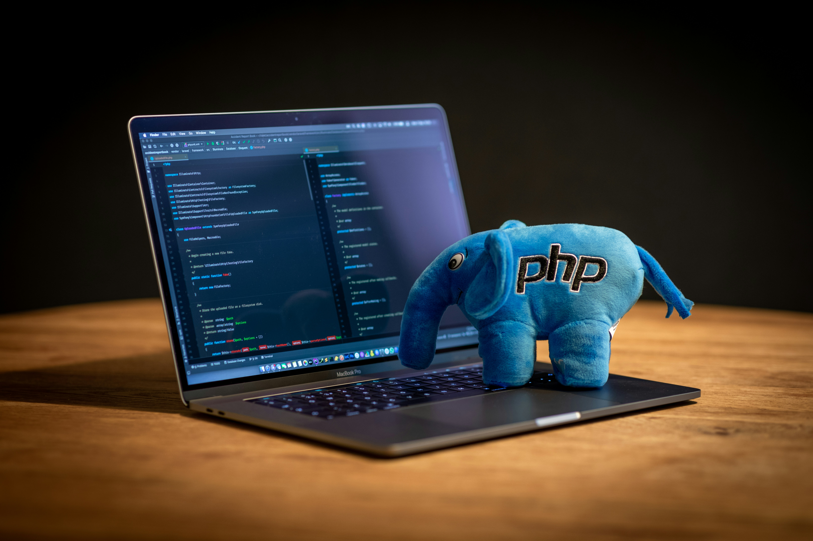

Présentation du langage
Les langages back-end permettent de gérer
la partie invisible d’un site web.
Ils ne sont pas visibles par les utilisateurs,
mais ils sont essentiels au bon fonctionnement du site.
Le back-end correspond à tout ce qui se passe
du côté du serveur, comme le traitement des données
et la communication avec la base de données.
Rôle principal
Le rôle principal des langages back-end est de gérer
la logique du site web.
Ils permettent de traiter les informations envoyées
par les utilisateurs, comme les formulaires.
Ils servent également à gérer les comptes utilisateurs,
les connexions et la sécurité du site.
Langages utilisés
Plusieurs langages sont utilisés pour le développement back-end.
Parmi les plus connus, on retrouve PHP, Python et SQL.
PHP et Python permettent de créer la logique du serveur,
tandis que SQL est utilisé pour gérer les bases de données
Utilité dans le développement web
Les langages back-end assurent le bon fonctionnement
et la fiabilité d’un site web.
Ils permettent de stocker, modifier et afficher
les données correctement.
Sans le back-end, un site web ne pourrait pas fonctionner
correctement ni interagir avec ses utilisateurs.
